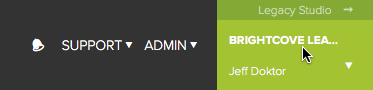
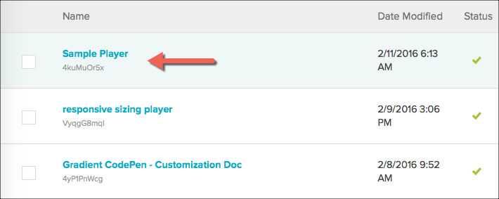
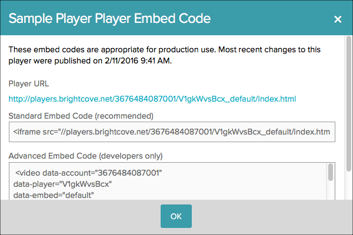

Quick Start to Brightcove Player
In this quick start you will perform the following tasks:
- Create a player using Video CloudPerform Studio
- Publish a video in the player using Video CloudPerform Studio
- Use the iframe player implementation
- Use the In-page embed implementation
- Programmatically play the video
- Add the overlay plugin to the player
- Create a player using Video CloudPerform Studio
- Associate a video with the player using Video CloudPerform Studio
- Publish the player using Video CloudPerform Studio
- Use the iframe player implementation
- Use the In-page embed implementation
- Programmatically play the video
- Add the overlay plugin to the player
Create player
To create a new player, follow these steps.
- Login to Perform Studio at https://studio.brightcove.com/products/perform/players/.
- Login to Video Cloud Studio at https://studio.brightcove.com/products/videocloud/players/.
- The current account name will appear in the upper right corner of the page. If you have multiple accounts, click the current user - current account link and select the account in which you would like to create the player.
 - Click the Players link in the navigation header.
- Click the New Player button.
- Enter a Name and Short Description for the player. For this quick start, the player name will be Sample Player.

- Confirm that the newly created player appears in the list of players.

Publish video in player
You publish a video in the newly created player in the Media module. Once you associate the video with your player you publish the video and will then have access to three implementations in which to view the video in your player.
To publish a video your player, follow these steps:
- In Video CloudPerform Studio navigate to the Media module by clicking on the Media link in the main menu.
- Click on the thumbnail for the video you wish to publish in your player, then click the Publish option.
- From the select control in the Select a Player section of the page, choose your newly created player.
- You now have access to the three implementations of the player, iframe, In-page and URL. Do not close this window as you will be copying code from it numerous times later in this quick start.


Note: If curious, you can see "under the hood" of the player configuration using the URL code. Click on the URL code link, then copy and browse the generated URL. Next, change the index.html at the end of the URL to config.json. You will see a JSON object detailing the current configuration of the player you just created.
Assign video to player
The Video Content properties are used to assign video content to the player.
To configure the video content properties, follow these steps.
- Click the link for the Sample Player to open the player properties page.
- Locate the Video Content section and click Edit.
- Add the rendition or renditions of your choice.
- Add a poster image. If you do not add a poster image the first frame of the video will be used.
- Do not set any dimensions for the video as this will be done via CSS in the page.
- Click Save.
For more information on the Video Content properties, see Configuring the Video Content Properties for a Player.
Publish player
Publishing the player will push the changes to the published player. For more information on preview players, published players and player publishing code, see Generating Player Publishing Code.
To publish the player, follow these steps.
- Click Publish and then Publish again to confirm the player publish.
- Confirm that the publish was successful.

- Click Embed Code & URL and click the Published Player link. The Published Player Embed Code dialog will display.
 - Copy all three of the code implementation type, Player URL, iframe Embed Code and In-page Embed Code to a text file for later use.
- The Player URL can be used to test player/video functionality quickly in a browser. Open a new browser tab and paste in the Player URL to view the published player. The player should occupy the entire width of the browser page.
Note: If curious, you can see "under the hood" of the player configuration by changing index.html at the end of the URL to config.json. You will see a JSON object detailing the current configuration of the player you just created.
Use iframe code
Note: To use the iframe implementation you will need to use a web server to browse the page because of iframe requirements. Simply viewing the page locally will not work.
- Create an HTML page and paste the iframe code from the previous step into the body.
- Create an HTML page and paste the iframe code from step 4 in the Publish player section above, into the body into the body.
- When you browse this page you will see the video displays in the default size of 300px wide and 150px high. Depending on the actual width and height of your video you may see letter boxing or column boxing.
- To set the size of the iframe different from the default you can use CSS. The following uses a CSS element selector to change the size of the iframe, and the video will fill the frame size.
- Save your changes and refresh your page in the browser to see the video at the new size.
- To see the built-in responsive sizing capabilities of the iframe player implementation change both the
heightandwidthin the iframe selector to100%. - Now surround the iframe tag in a
<div>tag block with a class ofvideoFrame. - Add a class selector style for the newly create
<div>element. - Save your changes and refresh your page in the browser. As you resize the browser you will see the iframe player implementation fill the changing size of the
<div>element.
<style>
iframe {
height: 344px;
width: 610px;
}
</style> <style>
iframe {
height: 100%;
width: 100%;
}
</style><div class="videoFrame">
<iframe ...>
</div>
.videoFrame {
height:56%;
width:100%;
}Note: You will see letter boxing and/or column boxing as you resize the browser. To see how to avoid this, the Responsive Sizing for the Brightcove Player document details the solution.
Use In-Page code
In this section you will use the In-page embed code implementation.
- Create an HTML page and paste the In-Page code (also called embed_in_page) from step 4 in the Publish video in player section above, into the body into the body.
- Create an HTML page and paste the In-Page code (also called embed_in_page), from step 4 in the Publish player section above, into the body.
- When you browse this page you will see the video displays in the default size of 300px wide and 150px high. Depending on the actual width and height of your video you may see letter boxing or column boxing.
- To set the size of the video different from the default you can use CSS. The following uses a CSS class selector to change the size of the player.
- Save your changes and refresh your page in the browser to see the video at the new size.
<style>
.video-js {
height: 344px;
width: 610px;
}
</style>Note: The last two sections of this quick start use JavaScrit to play the video as well as add the Overlay plugin to the player. If you are not comfortable with basic JavaScript these sections may not be relevant for you.
Programmatically play video
There is a rich API to use with Brightcove Player. In this section you will use the play() method to programmatically start the video playing.
- Add an
idattribute to thevideotag with a value of myPlayerID. - Just above the closing
bodytag, insert ascriptblock. - In the script block, use the
ready()method to bind the player'sreadyevent to an anonymous event handler function. - Create a variable local to the function, named myPlayer, that assigns the player instance, referenced as
this, to that variable. - Use the player's
play()method to start the video. - Confirm your script block appears as follows.
- Save your changes and refresh your page in the browser to see the video automatically start playing.
Add plugin
Brightcove Player has many plugins you can utilize to enhance the player. One such plugin is the Overlay Plugin. In this section you will add that plugin to the In-page Embed code you finished in the last section. For details on the plugin see the Display Overlay Plugin document.
When using a plugin you must supply the path to the JavaScript that is the plugin implementation. You may also have to supply the link to a CSS if needed by the plugin.
- Just above the closing
headtag, insert the following link statement which points to the location of the CSS for the overlay plugin. - Just above the script block you added earlier, add the following
scripttag that is the actual JavaScript code that implements the overlay plugin functionality. - Just after where the
play()method is used, call the player'soverlay()method, and add braces as a parameter to prepare for passing a JSON configuration object. - Multiple overlay objects can be passed as an array to the plugin to display different content at various times and in various locations. In this case, just one overlay object will be passed to display some text, and have it appear only when the video is playing. When the video is paused the overlay will not be displayed. To implement this, add the following overlay object as a configuration parameter.
- Confirm your script block appears as follows, and that the overlay plugin has been called and configured correctly.
- Save your changes and refresh your page in the browser to see the video automatically start playing. You will see the overlay appear when the video starts. Pause the video to see the overlay removed.
- For your review, the entire page's HTML code can be viewed here:
Note: The implementation of the Overlay Plugin show here will only be used with the player on the specific HTML page. You can add a plugin to be part of a player no matter where or how many times the player is used without having to copy and paste code repeatedly. See the Quick Start to Plugin Development to see a developer oriented approach to the implementation, or the Configuring Player Plugins document to see how to implement the plugin in the player using Studio.